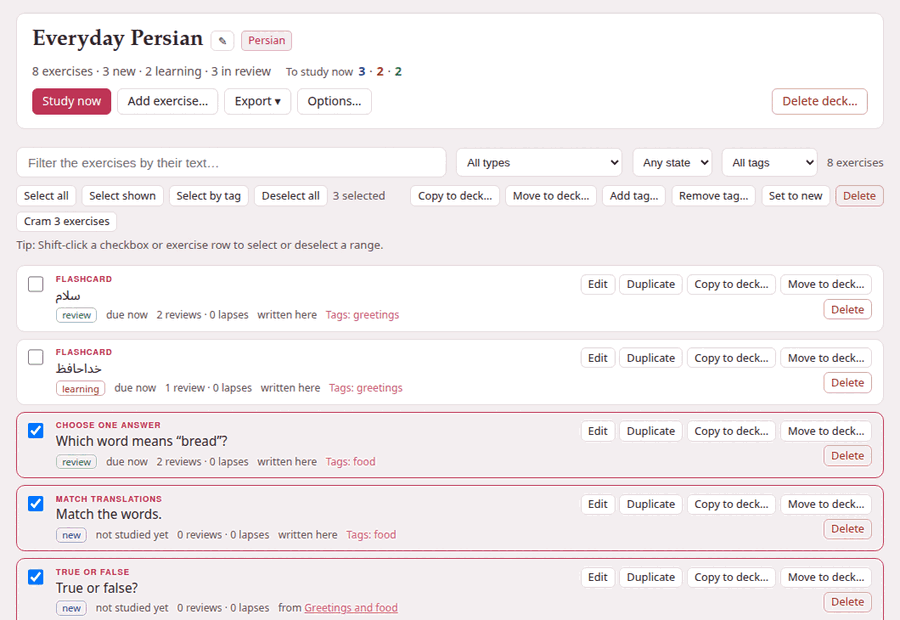

A deck’s page
Browse on a deck’s card, or the deck’s name, opens the deck’s page. The top of it is the deck; below is every exercise it holds.

1. The deck’s head#
- The name
- , with ✎ beside it to rename the deck, and the deck’s language.
- The counts
- :
8 exercises · 3 new · 2 learning · 3 in review— every exercise the deck holds, by where it stands (learning counts the ones relearning after a lapse too). - To study now
- , the same three coloured numbers as on the decks page — or, when nothing is due, when the next exercise is.
And its buttons:
| Button | What it does |
|---|---|
| Study now | Studies what is due. Dimmed when nothing is. |
| Add exercise… | The exercise form, to write an exercise straight into the deck (more). |
| Export ▾ | With scheduling or Without scheduling: the deck as a zip (more). |
| Options… | Daily limits, learning steps and intervals: Deck options. |
| Delete deck… | Moves the deck to exercises/.trash/, after asking. |
← All decks in the top bar goes back to the decks page.
Renaming a deck#
✎ asks for the new name — Only the name changes: the deck’s address, exercises and scheduling stay. The deck’s address is made from its first name and never changes, so a bookmark of the deck, or of its study page, keeps working after a rename.
Deleting a deck#
Delete deck… says what will happen before it happens: Its 8 exercises and their scheduling are moved to exercises/.trash/ in the Parseh folder, not erased: move the folder back to restore the deck. Delete deck does it and takes you back to the decks page. In the trash the deck’s folder is named after its language, its address and the moment it was deleted — persian--everyday-persian--20260921-143012 — and moving it back to exercises/persian/everyday-persian restores it whole.
2. The list#
Each exercise is a row, in the order they were added:
- What kind it is
- — Flashcard, Choose one answer, Match translations … — and, for one that no longer works, a red needs attention; point at it to read why.
- Its opening words
- : the prompt, a card’s front, or the first answer.
- Where it stands
- :
new,learning,relearningorreview, then when it is due —not studied yet,due now,due in 7m,due tomorrow,due in 4d. - Its history
- :
2 reviews · 0 lapses— how many times you answered it, and how many times you forgot it once it was a review. - Where it came from
- : from and the document it was copied from, linked (or the note beside a book or a video); from and the book or the video a card was made in, with the place — its link opens the reader at that paragraph, or the player at that second; written here for an exercise added on this page; and a copy made with Duplicate says so, (a duplicate).
- Its tags
- :
Tags: food, lesson-1.
Click a row to see the exercise drawn solved under it — the right answers marked, the explanations shown, a flashcard’s front and back side by side; click it again to close it. Several can be open at once. The buttons, the links and the checkbox of a row keep their own clicks, and Shift with a click selects instead (see Selecting many exercises).
3. Finding exercises: the filters#
The bar above the list narrows it:
| Filter | What it keeps |
|---|---|
| Filter the exercises by their text… | exercises whose text or markdown holds what you type, whatever its case |
| All types | one kind of exercise; each kind is listed with how many there are, Flashcard (2) |
| Any state | New, Learning (relearning included), Review, or Due now: the reviews and learning steps due at this moment |
| All tags | the exercises with one tag, food (4) |
They work together, and the count at the end of the bar says how many rows are left: 3 of 8, or 8 exercises with no filter on. When nothing matches, the list says No exercise matches these filters.
Due now leaves out the new exercises (they are under New); a review counts as due for the whole of the day it falls on, and a learning step from the minute it falls due. An exercise whose markdown is no longer an exercise at all is listed under the type Unreadable.
4. Each exercise’s own buttons#
| Button | What it does |
|---|---|
| Edit | Opens the exercise in the form, as the editor does; Save exercise saves it. |
| Duplicate | Adds a copy of it, which starts as new: Duplicated: the copy starts as new. |
| Copy to deck… | Copies it into another deck of the same language (more). |
| Move to deck… | Moves it there, with its schedule. |
| Delete | Removes it, and its history, for good. |
Edit keeps the schedule. Correcting a typo does not make an exercise new again, and does not change where it came from: the schedule belongs to you, not to the words. An exercise the form cannot show — one that needs attention, say — opens as its markdown instead (Edit the exercise as markdown), so it can still be put right from here. If the edited exercise names a picture or a recording the deck does not have, it is saved all the same, and the message says which file is missing.
Delete asks first — “Match the words.” and its scheduling (1 review) leave the deck for good — and then Delete exercise. Unlike a deck, a deleted exercise does not go to the trash.
5. An empty deck#
A deck with no exercises says how to fill one: Add exercise… above, or + Deck beside an exercise on a studio document in the deck’s language; the readers of books and the players of videos add the cards made there, with their recordings.